Module 2.4
Advanced data visualization with ggplot and more
Fall 2020
Thanks to Stephanie Freund, who pulled this module together!
Visualization often plays a major role in the research process, from quality assurance, to data exploration, to the presentation of analytical results. On Day 1, you learned how to create several types of plots in base R. Base R is great for whipping up some quick plots for initial data exploration, and you can make them quite beautiful looking as well.
When you start creating a lot of plots for which you might want to quickly and easily adjust graphical elements, or want to create more complex plots that display a lot of information in one place, the data visualization package ggplot2 is extremely useful. In this module, we’ll introduce ggplot syntax and briefly survey some of the package’s plotting capabilities.
Load script for module #2.4
Click here to download the script! Save the script to a convenient folder on your laptop.
Load your script in RStudio. To do this, open RStudio and click on the folder icon in the toolbar at the top and load your script.
Using ggplot2
ggplot2 is an R package developed by Hadley Wickham and colleagues that is based on Leland Wilkinson’s “Grammar of Graphics”. If you are interested in learning more about the philosophy behind ggplot2 and object-oriented design, you can read Hadley’s paper about it here.
All graphics produced in ggplot2 are built using elements of this grammatical framework. ggplot2 is modular, so that you can easily modify how your plot looks by adding or editing layers, and it generates more features by default (e.g. gridlines, legends with titles, etc) than base R. This saves you time spent cobbling together all of these elements from scratch.
Basics
A typical workflow begins with initiating plotting with the ggplot() function and specifying your dataset. You can then add geometric objects, beginning with geom_, to represent your data in the form of a boxplot (geom_boxplot()), scatterplot (geom_point()), or a variety of other types of plots. The aes() function can be called within these “geoms” to specify which variables to display and to adjust how the data are displayed. aes() can also be used within the initial call to ggplot().
To demonstrate, we’ll use the Soils dataset from the ‘carData’ package, which contains soil attributes from a gilgai landscape (depressions caused by shrinking and swelling of clays during dry and wet seasons) in Australia.
First, install and load ggplot2 and the other packages we’ll be using for this module.
########
# Load packages!
## note: if you don't already have these packages you will need to install them first!
library(tidyverse)
library(ggplot2)
library(ggthemes)
library(carData)
library(DAAG)
library(RColorBrewer)
library(leaflet)Now load the dataset.
##############
# Load the example data!
data(Soils,package = "carData") # load example data
#See what variables it contains...
soil <- data.frame(Soils)
head(soil)## Group Contour Depth Gp Block pH N Dens P Ca Mg K Na
## 1 1 Top 0-10 T0 1 5.40 0.188 0.92 215 16.35 7.65 0.72 1.14
## 2 1 Top 0-10 T0 2 5.65 0.165 1.04 208 12.25 5.15 0.71 0.94
## 3 1 Top 0-10 T0 3 5.14 0.260 0.95 300 13.02 5.68 0.68 0.60
## 4 1 Top 0-10 T0 4 5.14 0.169 1.10 248 11.92 7.88 1.09 1.01
## 5 2 Top 10-30 T1 1 5.14 0.164 1.12 174 14.17 8.12 0.70 2.17
## 6 2 Top 10-30 T1 2 5.10 0.094 1.22 129 8.55 6.92 0.81 2.67
## Conduc
## 1 1.09
## 2 1.35
## 3 1.41
## 4 1.64
## 5 1.85
## 6 3.18We’ll start with a basic boxplot. Let’s say we’re interested in how pH, a continuous variable, varies with the contour position, a categorical factor.
########
# basic boxplot...
ggplot(soil) +
geom_boxplot(aes(x=Contour, y=pH))
You can see that the default plot includes a gray background with white gridlines. This makes all of the elements on this plot easy to see, but as you start adjusting colors and identifying your personal preferences, you’ll probably want to customize this – ggplot has a ton of options for doing so.
Let’s try a scatterplot of two continuous variables, Calcium content and pH.
###########
# basic scatterplot
ggplot(soil) +
geom_point(aes(x=pH, y=Ca))
Now let’s say you wanted to examine how the relationship between pH and Ca varies with depth. You could go back to your scatterplot and use color to identify points from the different sampling depths. ggplot will select default colors that display well against the default gray background.
########
# Color the points by depth
ggplot(soil) +
geom_point(aes(x=pH, y=Ca, color=Depth))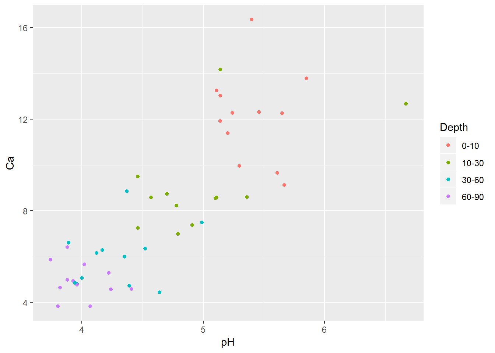
We can play with how those points look if we want them to show up more boldly. Take note that arguments that affect all of the points equally, and don’t relate to how variables are displayed, fall outside of the aes function.
##########
# make additional alterations (outside the "aes" function)
ggplot(soil) +
geom_point(aes(x=pH, y=Ca, fill=Depth), shape=21, color="black", size=4, stroke=1.5)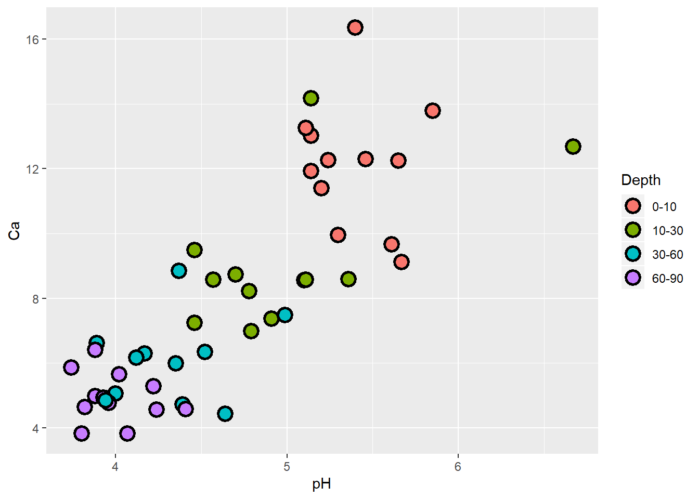
Cool! Let’s use the same grammar to plot relationships between pH and several soil nutrients on the same graph. Notice that the y axis label defaults to the first set of points (Ca), and we’d need to modify it. The depths in the legend also have no units! You’ll see how to change things like axis labels and legend titles in a moment.
######
# Plot several relationships on same graphics window
ggplot(soil, aes(x=pH)) +
geom_point(aes(y=Ca), shape=21, fill="red", color="black", size=4, stroke=1.5) +
geom_point(aes(y=Mg), shape=21, fill="blue", color="black", size=4, stroke=1.5) +
geom_point(aes(y=Na), shape=21, fill="gray30", color="black", size=4, stroke=1.5)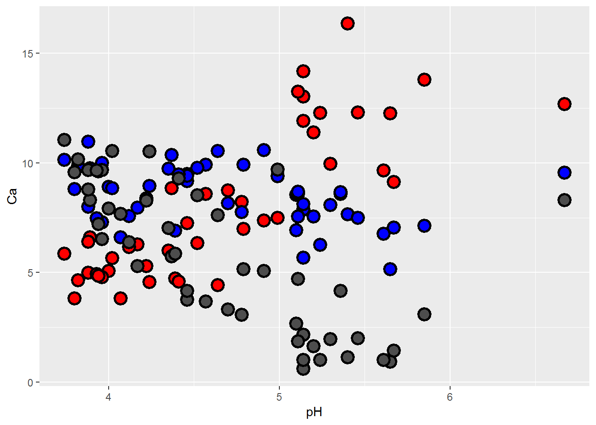
Here’s another way to plot multiple series, after reshaping with tidyr. This lets us plot our different nutrients as factor levels without typing each one with its specifications on its own line, and generates a legend that identifies the series (and also gives the default ggplot colors).
#########
# Use 'tidyverse' tricks to simplify the syntax for ggplot to color by nutrient
soil.nut <- gather(soil, nutrient, value, c(10,11,13))
ggplot(soil.nut) +
geom_point(aes(x=pH, y=value, fill=nutrient), shape=21, color="black", size=4, stroke=1.5)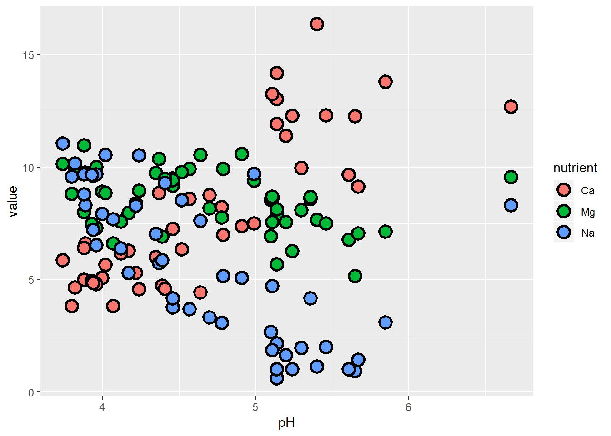
What if instead of Na, we had K as our third nutrient of interest?
######
# or if we wanted to plot different nutrients...
soil.nut2 <- gather(soil, nutrient, value, c(10,11,12))
ggplot(soil.nut2) +
geom_point(aes(x=pH, y=value, fill=nutrient), shape=21, color="black", size=4, stroke=1.5)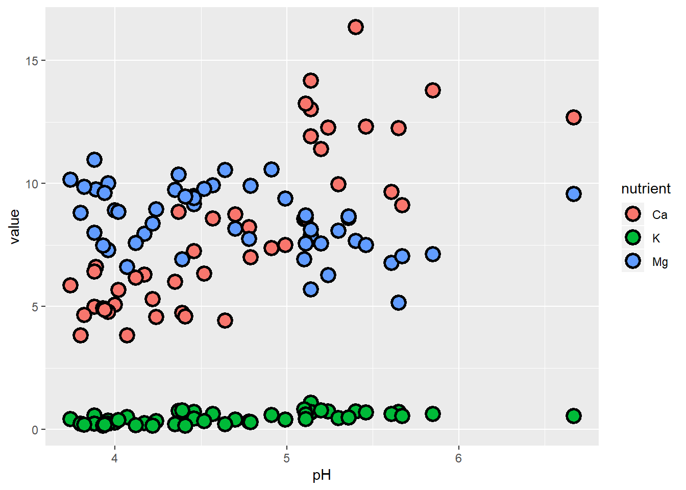
The problem here is that K occurs at natural concentrations that differ from the other nutrients by an order of magnitude, so it’s difficult to examine them all on the same scale. One approach we can take is to plot them separately. While we’re at it, let’s also make sure that we specify the response units on the y-axis.
Facets, scales, and themes
The next plot introduces:
facets, which allow you to display data on separate panels using some grouping variable
scales, which allow you to adjust how to represent the data with axes and colors
themes, which allow you to adjust the entire plot aesthetic (using
theme_X()) as well as individual elements of legends, text, and more (usingtheme()).
##########
# plot with facets, scales, and themes!
ggplot(soil.nut2) +
geom_point(aes(x=pH, y=value, fill=nutrient),
shape=21, color="black", size=4, stroke=1.5) +
facet_wrap(~nutrient, scales="free_y") +
ylab("mg / 100 g soil") +
theme_bw() +
theme(legend.position="none",
axis.text = element_text(size=14),
axis.title = element_text(size=16),
strip.text = element_text(size=16, face="bold"))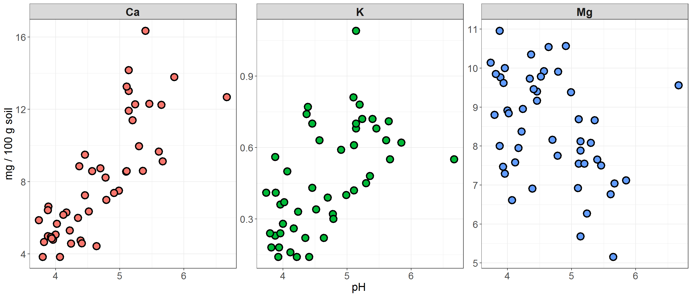
In this plot, we’ve kept the different colors for each nutrient, but suppressed the legend that is auto-generated by ggplot, because this information is now redundant with the headers of the three facets. In the facet_wrap function, we used scales to specify that the y-axis should be bounded to fit the data within each facet. There are some cases where you would probably want the axes to be the same – e.g. if you were comparing raw values across groups, rather than the distributions or trends of the data.
We also changed the theme! ggplot has 8 built-in themes to choose from. There are also lots of other themes built into extension packages such as ggthemes. Here are a few examples of different themes applied to the plot we just made.
{kind=link}
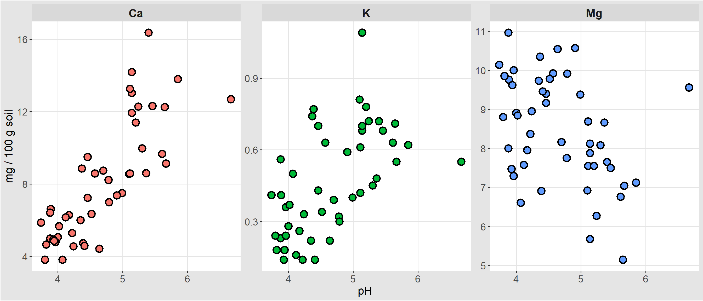 theme_igray
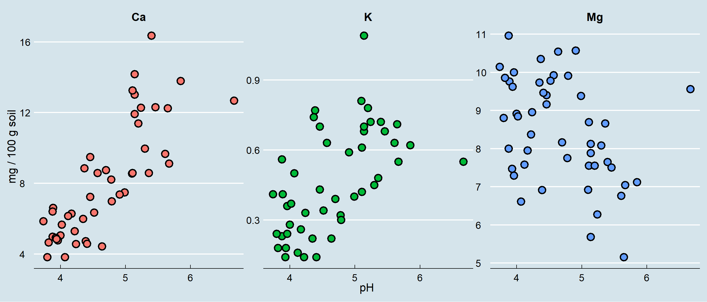 theme_economist
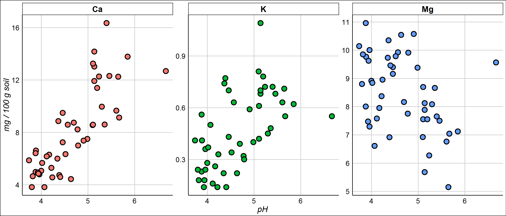 theme_gdocs
Check out the options and play around with different themes until you find some that appeal to you and lend themselves to the type of data visualization and color scales you plan to use.
You can also fine-tune pretty much any of the details (gridlines or no? plot borders? line weight of the borders and gridlines? axis label angles?) to your heart’s content using the arguments in the theme() function.
Speaking of color…
Specifying colors
Sometimes sticking to the default colors in ggplot isn’t the best choice. You might have factors representing ordered ranks, like in an experiment with different levels of light exposure, and want to represent these levels on a monochromatic scale. Or you might want to make a map displaying regions of positive or negative change in forest cover, using a diverging color scale. Or you don’t even like the default ggplot colors, and have your own preferred color schemes. It’s also important to remember that red-green colorblindness is fairly common, so if you are presenting data that must be distinguished by colors in a single plotting area, you should probably avoid this combination or combine it with changes in value (light to dark) in order for your plot to be accessible.
Going back to our earlier example showing Ca content by pH at different depths, let’s say we want a color scheme where deeper depths are represented by darker values of the same color. We can do this by using another scale function.
One method is to use scale_fill_brewer, and select an already composed color palette from RColorBrewer (a package you’ll need to install). You can check out all of the options available in RColorBrewer by entering display.brewer.all(), which shows the sequential palettes, then categorical palettes, than diverging palettes.
############
# Playing with colors in ggplot!
display.brewer.all()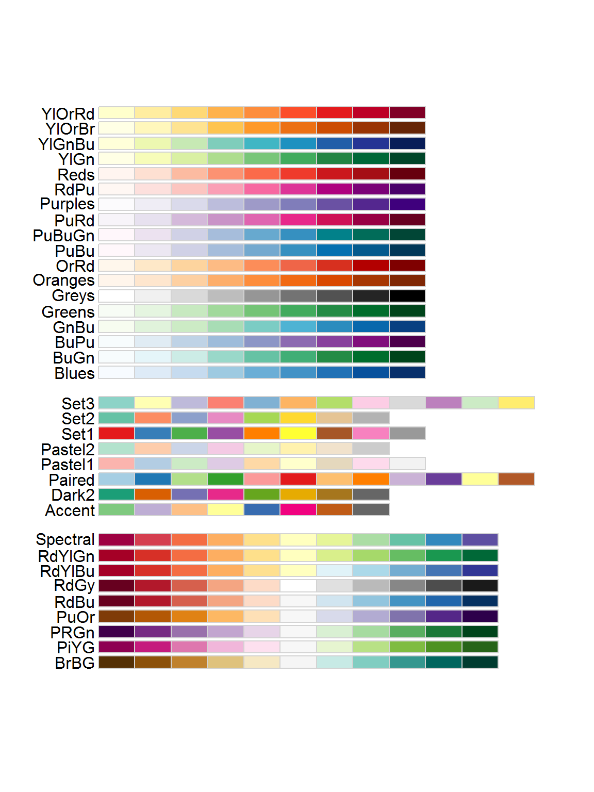
I’m going to pick the YlOrBr (Yellow-Orange-Brown) palette, because those seem like good soil-y colors. Notice that because fill is mapped to the values of the data, inside this function is where I can change the title of the legend (and the labels for the different values, if I wanted to do that).
#########
# Choose a new color palette from the RColorBrewer package
ggplot(soil) +
geom_point(aes(x=pH, y=Ca, fill=Depth), shape=21, color="black", size=4, stroke=1.5) +
theme_bw() +
ylab("Ca (mg/100g soil)") +
scale_fill_brewer(palette="YlOrBr", name="Depth (cm)")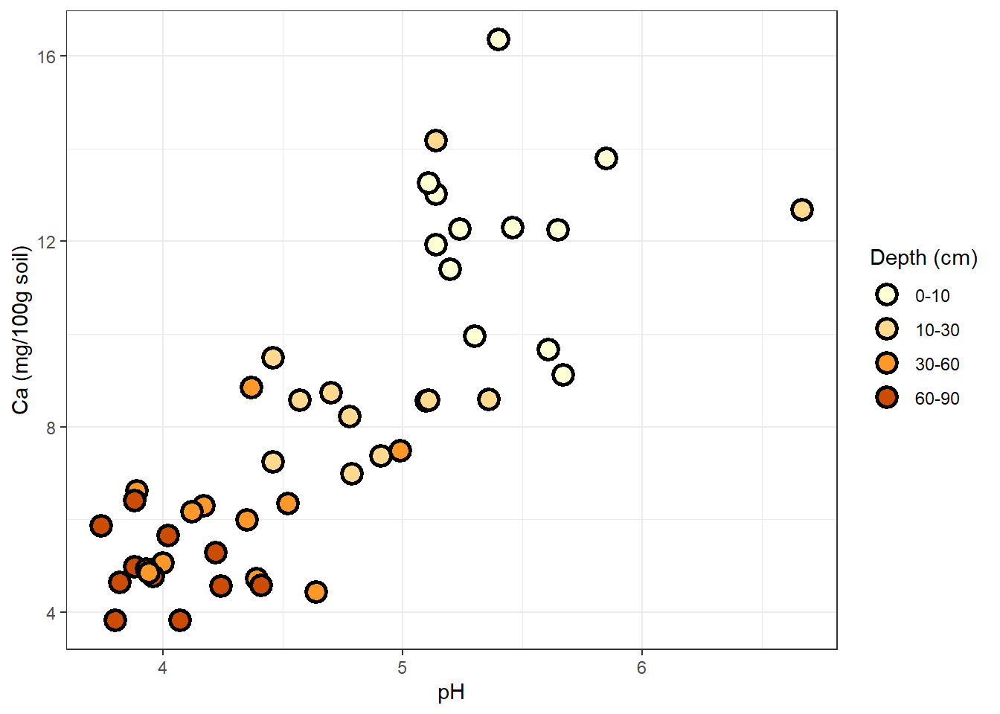
Another method is to use scale_fill_manual, with which you define your own palette. To pick out your colors, you can use the names of colors already recognized by R, or use hex codes for any color you want.
#########
# Choose your own palette!
ggplot(soil) +
geom_point(aes(x=pH, y=Ca, fill=Depth), shape=21, color="black", size=4, stroke=1.5) +
theme_bw() +
ylab("Ca (mg/100g soil)") +
scale_fill_manual(values=c("#FFF0BF","#FFC300","#BF9200","#604900"), name="Depth (cm)")
What if depth were a continuous variable, rather than a set of four discrete categories? We could use scale_fill_gradient, supply the hues we want (one for monochromatic, two for diverging) and R would map the soil depth values to color values along the gradient.
Trendlines
Next, we might want to add a trendline to each set of points. Try it for the plot we made of different nutrient concentrations as a function of pH. Arguments in the geom_smooth() function allow us to change the confidence level, the smoothing method, and other details.
##########
# add trendlines
ggplot(soil.nut2) +
geom_point(aes(x=pH, y=value, fill=nutrient),
shape=21, color="black", size=4, stroke=1.5) +
geom_smooth(aes(x=pH, y=value), method="lm", color="black") +
facet_wrap(~nutrient, scales="free_y") +
ylab("mg / 100 g soil") +
theme_bw() +
theme(legend.position="none",
axis.text = element_text(size=14),
axis.title = element_text(size=16),
strip.text = element_text(size=16, face="bold"))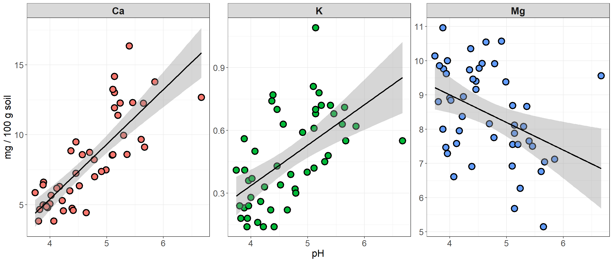
Density curves and error bars
Using geom_smooth to plot trendlines is a useful way to get more information from your scatterplots. To get an idea for how other kinds of statistical elements can be drawn onto ggplot plots, we’ll look at examples using histograms and boxplots.
First, a simple histogram of 3 soil nutrients.
###########
# Adding density/smooth curves to plots
## first produce some histograms
ggplot(soil.nut) +
geom_histogram(aes(x=value), color="black", fill="white", bins=15) +
facet_wrap(~nutrient, scales="free") +
xlab("mg / 100g soil") +
theme_dark() +
theme(axis.text = element_text(size=14),
axis.title = element_text(size=16),
strip.text = element_text(size=16, face="bold"))
Here is how to add a density curve to the histogram with another geom:
########
# Then add density curves
ggplot(soil.nut) +
geom_histogram(aes(x=value, y=..density..), color="black", fill="white", bins=15) +
geom_density(aes(x=value,color=nutrient), size=1.5) +
facet_wrap(~nutrient, scales="free") +
xlab("mg / 100g soil") +
theme_dark() +
theme(legend.position="none",
axis.text = element_text(size=14),
axis.title = element_text(size=16),
strip.text = element_text(size=16, face="bold"))
And here’s how we can compare our distributions to a normal distribution, using a stat function:
###########
# And now let's use a statistical function (dnorm) in ggplot to compare with a normal distribution:
ggplot(soil.nut) +
geom_histogram(aes(x=value, y=..density..), color="black", fill="white", bins=15) +
stat_function(fun = dnorm, color = "blue", size = 1.5,
args=list(mean=mean(soil.nut$value), sd=sd(soil.nut$value))) +
facet_wrap(~nutrient, scales="free") +
xlab("mg / 100g soil") +
theme_dark() +
theme(legend.position="none",
axis.text = element_text(size=14),
axis.title = element_text(size=16),
strip.text = element_text(size=16, face="bold"))
Let’s go back to our basic boxplot, the default plot for visualizing continuous data against categories.
First, you may have noticed that the whiskers do not have caps on them, as they do in base R. This is a matter of principle personal preference, but if capless whiskers look “off” to you, then you can work around it using stat_boxplot. stat functions are another group of functions for creating layers based on statistical properties of the data. Another example is stat_summary, which we use in the example below to add means to the boxplot.
#######
# add error bars and other stat summaries (e.g., mean) to boxplot
ggplot(soil, aes(x=Contour, y=pH)) +
stat_boxplot(geom="errorbar", width=0.2) +
geom_boxplot() +
stat_summary(fun.y=mean, geom="point", size=5, color="black")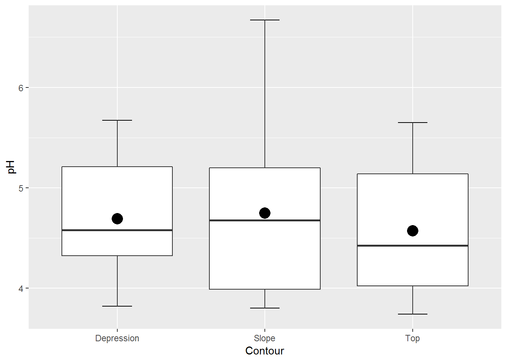
Beyond ggplot
ggplot contains an incredibly rich and powerful set of tools for visualizing data. But ggplot and base R are not your only options! A variety of packages exist for visualization, including:
ggplot extensions
Several packages have been created that build off of ggplot’s syntax with additional functions. You can find a list of them here.
Technique-specific plotting libraries
Several analytical packages come with their own plotting functions that produce some very nice visualizations. There are dozens out there, but a few of them are visreg for regression plots, corrplot (and its ggplot counterpart, ggcorrplot) for graphical presentation of correlation matrices, and rpart.plot as a companion to the decision tree package rpart.
Interactive plots: leaflet and plotly
Increasingly, scientific journals are providing platforms for interactive graphics on their websites to accompany published articles. Interactive plots are also popular for personal, lab, and organizational websites, and they can provide another option for your own data exploration. Two of the most popular in R are plotly, which offers a huge variety of 2D and 3D plots, and leaflet, which is specifically for mapping.
Here’s a quick and simple example of leaflet in action using the “possumsites” dataframe that accompanies the “possum” dataset in the DAAG package. The dataset contains body measurements of several possums in Australia. Where did they catch these possums?
##########
# use leaflet for interactive mapping!
leaflet(possumsites) %>%
addTiles() %>% #Adds map tiles from OpenStreetMap
addMarkers(lng=c(possumsites$Longitude), lat=c(possumsites$Latitude),
popup=c(as.character(possumsites$altitude))) #Adds markers for the sitesHappy plotting!
Challenge exercises
Using our scatterplot of calcium by pH, in which points were colored according to which depth they represent, fit a trendline to each cloud of points. Have the color of the trendline match the color of each cloud of points, and remove the confidence band from the trendlines.
Create a boxplot that shows the values of Ca, Mg, and Na across all 3 contour positions, with no faceting (all on one plot). Add a diamond symbol indicating the mean value across all 3 contour positions for each nutrient.
Plot the density curves of Ca, Mg, and Na atop each other with fixed y and x axes. Make them transparent in color in order to see overlapping areas.